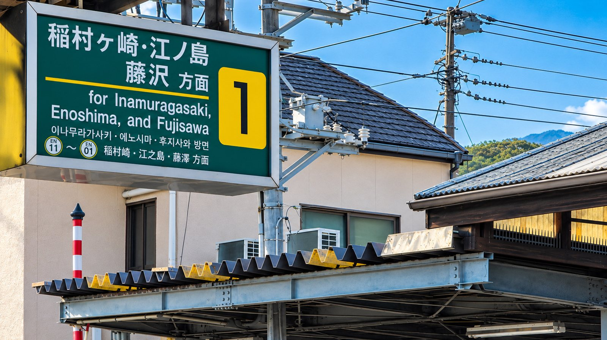
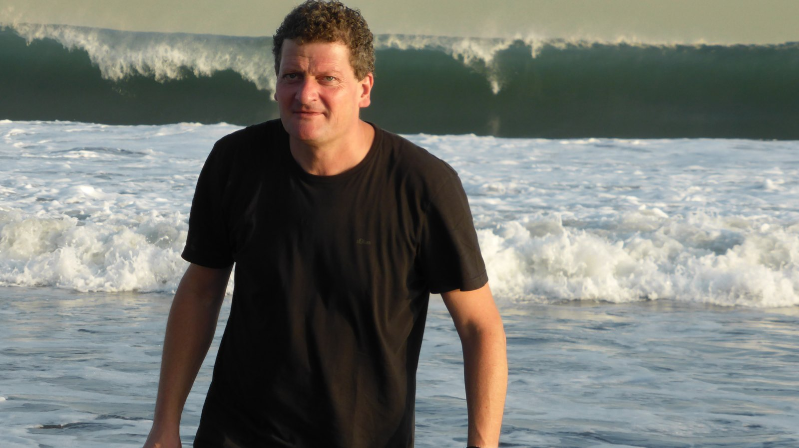
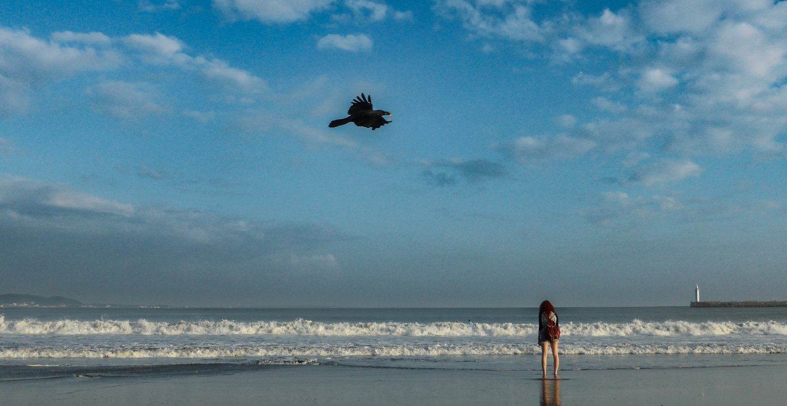
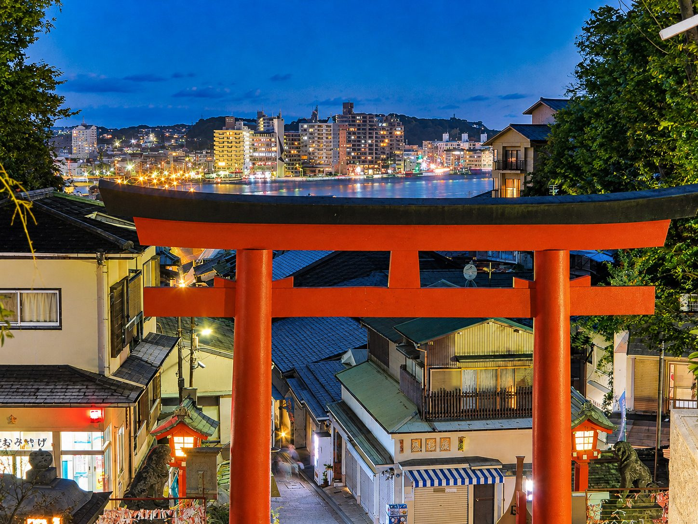
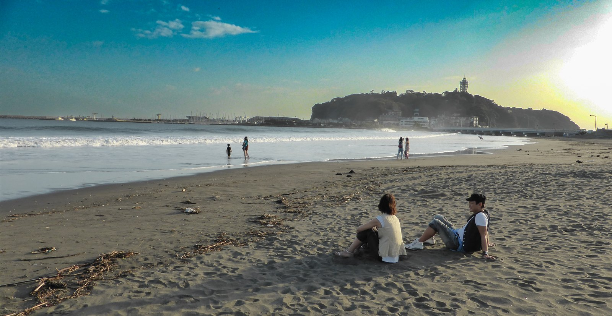
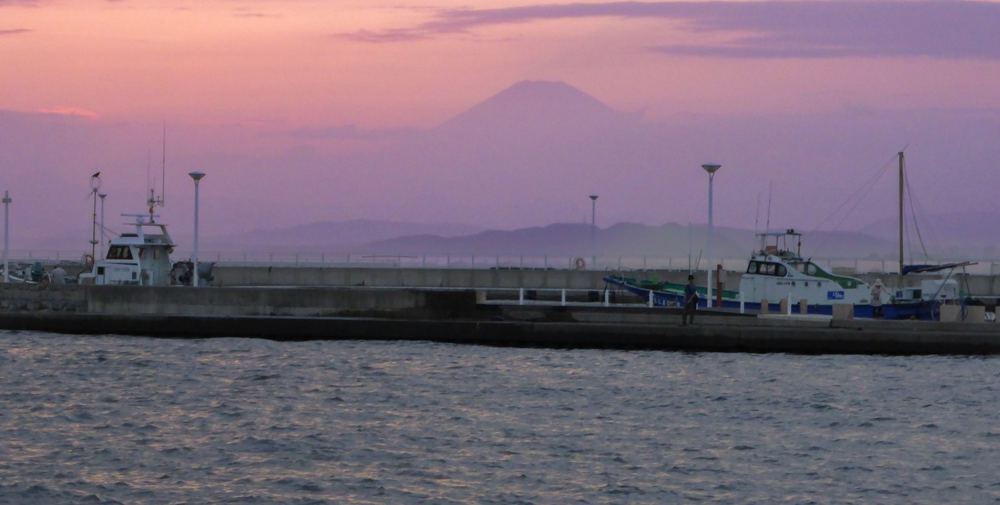
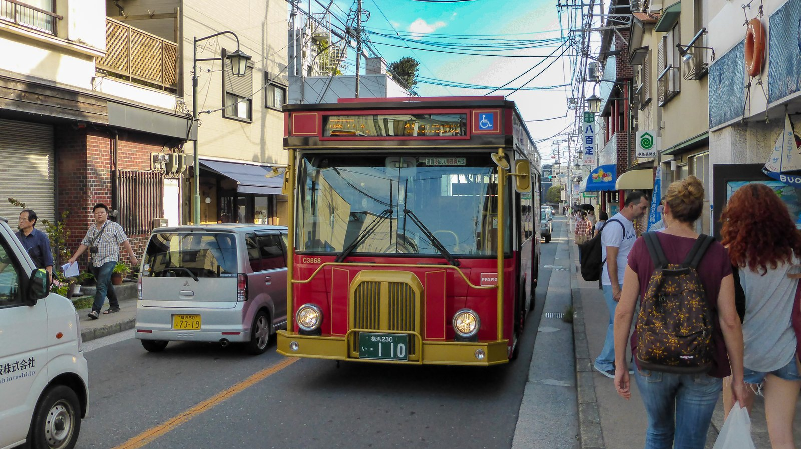
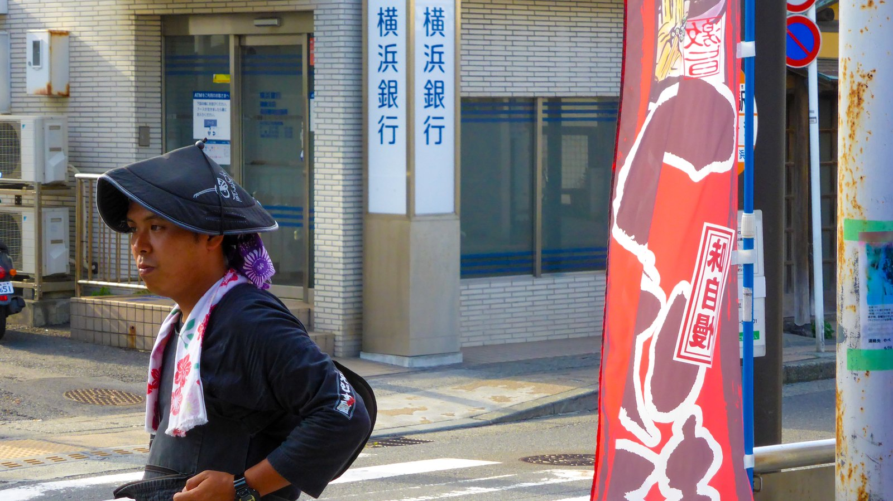
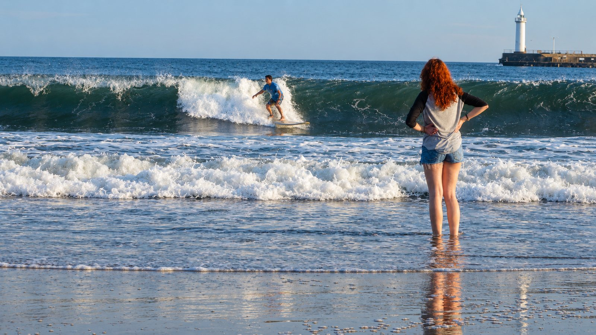

Kamakura war einst Hauptstadt des Shogunats. Heute fährt halb Tokio hierher, sobald die Wellen stimmen. Ich bin zwischen 2009 und 2017 viermal hergefahren, mit dem Zug ab Yokohama, fast immer, wenn ich gerade in Tokio war. Zum Surfen selbst hat es in Kamakura nie gereicht. Am Strand gesessen und auf das Meer geschaut, das schon.

Die Stadt, die ein Feldherr zur Hauptstadt machte
1185 gewann Minamoto no Yoritomo den Genpei-Krieg gegen den Taira-Clan. 1192 verlieh ihm der Kaiser den Titel Shogun. Der Kaiserhof blieb in Kyoto, Yoritomo regierte von hier. Je nach Zählung beginnt das Kamakura-Shogunat 1185 oder 1192. Es war die erste Militärregierung Japans und hielt sich bis 1333. Samurai statt Hofadel.
Yuigahama: Wo schon der Shogun ins Wasser ging
Der Strand von Yuigahama. Schon Minamoto no Yoritomo vollzog hier rituelle Waschungen im Meer, bei Maehama, wie der Strand damals hieß, bevor er die Schreine von Hakone und Izu besuchte. Bis heute waschen sich Priester des Tsurugaoka-Hachimangū-Schreins jedes Jahr im September zum Reitaisai-Fest im selben Wasser.
Gesurft im heutigen Sinn hat hier niemand. Im 12. Jahrhundert gab es weder Neoprenanzug noch Longboard.
Surfen in Kamakura: Wo Japans Surfkultur begann
Die Küste zwischen Kamakura und Ōiso gilt als Wiege der modernen japanischen Surfkultur. In den 1960er-Jahren brachten US-Soldaten der nahen Stützpunkte ihre Bretter mit und zeigten den Jungs aus den Küstenorten, wie man darauf aufsteht.
Tipp: Im Juli und August sind Yuigahama, Zaimokuza und Koshigoe offizielle Badestrände, 2026 vom 1. Juli bis 31. August, jeweils 9 bis 17 Uhr. In dieser Zeit sind dort nur Softboards in einer eigenen Softboard-Zone erlaubt, mit Leash. Vor 9 und nach 17 Uhr darf am Yuigahama überall gesurft werden.


Der Buddha, der sein Dach verlor
Im Stadtteil Hase steht der Kamakura Daibutsu, ein Bronzebuddha, mit Sockel 13,35 Meter hoch und rund 121 Tonnen schwer. Mit dem Guss wurde 1252 begonnen. Ursprünglich saß er in einer Halle und war komplett vergoldet. Vom Gold sind nur noch Spuren am Kopf übrig. Ein Sturm hat die Halle 1334 zerstört, ein zweiter hat sie 1369 beschädigt, beide Male wurde sie wieder aufgebaut. Den letzten Bau hat 1498 ein Tsunami weggespült. Seitdem sitzt der Buddha draußen in der salzigen Seeluft.

Enoshima: Ein Berg der Göttin, mitten im Meer
Enoshima ist keine Insel im Sinne von weit weg, man geht über eine Brücke hinüber. Sie gehört übrigens schon zur Nachbarstadt Fujisawa. Oben steht der Enoshima-Schrein, eigentlich sind es drei Schreine. Zusammen zählen sie zu den drei großen Benzaiten-Heiligtümern Japans. Benzaiten ist für das Meer und die Musik zuständig, auch für Wohlstand. Der Sage nach stieg sie vom Himmel herab und bändigte einen fünfköpfigen Drachen. Der Drache verliebte sich in sie und hörte auf zu wüten.

Oben im Cocking-Garten liegen die Reste eines Gewächshauses aus der Meiji-Zeit. Der britische Kaufmann Samuel Cocking hat es gebaut, einst war es eines der größten in Ostasien. Das Große Kantō-Erdbeben von 1923 hat es zerstört, heute schaut man durch Glas auf die freigelegten Grundmauern. Gleich daneben steht der Sea Candle, knapp 60 Meter hoch, mit Blick bis zur Miura-Halbinsel.


Der Fuji zeigt sich nicht jedes Mal. Er blinzelt eher, taucht kurz zwischen Dunst und Wolken auf und verschwindet wieder. An diesem Tag hatte ich Glück.

Weiter weg von Fukushima, als ich dachte
Was mich überraschte: Fukushima liegt nicht so nah, wie ich lange glaubte. Ich hätte auf hundert Kilometer geschätzt. Tatsächlich sind es rund 270, Luftlinie bis zum Kraftwerk Fukushima-Daiichi. Von Tokio aus sind es etwa 225 Kilometer nach Nordnordost, und Kamakura liegt noch ein Stück weiter südwestlich. Weil ich 2009 schon einmal hier war, habe ich nach 2011 genau hingeschaut, ob sich etwas verändert hat. Neu waren höchstens ein paar Tsunami-Warnschilder.
Straßen, Busse, sehr freundliche Menschen
Alte Busse kurven durch schmale Straßen. Männer mit traditioneller Kopfbedeckung laufen neben Touristen mit Surfbrettern unterm Arm. Ich bin hier erstaunlich schnell mit Japanern ins Gespräch gekommen, öfter als anderswo. Vielleicht, weil hier weniger gehetzt wird. Vielleicht, weil eine Kamera in der Hand hier wie eine Einladung aussieht.


Zuschauen
Laura stand bis zu den Waden im Wasser und hat einem Surfer zugeschaut, unter dessen Füßen gerade die Welle brach.

Quellen & Recherche
Diese Story basiert nicht nur auf eigenen Erinnerungen. Ein paar Fakten habe ich recherchiert und mit folgenden Quellen abgeglichen. Wer will, kann selbst nachlesen.
- Minamoto no Yoritomo, Shogun ab 1192, Wikipedia
- Kamakura-Periode, Wikipedia
- Yuigahama, Maehama und das Reitaisai-Fest, Nippon.com
- Shōnan, Wiege der modernen japanischen Surfkultur, Jakarta Post
- Kōtoku-in, offizielle Tempelseite
- Kōtoku-in: Stürme 1334 und 1369, Tsunami 1498, Wikipedia
- Großer Buddha von Kamakura, Nippon.com
- Die drei bedeutendsten Benzaiten-Schreine Japans, Wikipedia
- Cocking-Garten, Gewächshausruine, offizielle Seite Enoshima Sea Candle
- Enoshima Sea Candle, Wikipedia
- Kernkraftwerk Fukushima-Daiichi, Wikipedia (Koordinaten; Entfernung zu Kamakura eigene Luftlinienberechnung)
- Entfernung Tokio–Fukushima-Daiichi, Christian Science Monitor
- Großer Buddha: Baubeginn, Maße, Zerstörung der Halle, ANA Japan Travel Planner
- Goldspuren am Großen Buddha, Atlas Obscura
- Enoshima-Schrein und Benzaiten, Visit Kanagawa
- Surfgeschichte Shōnan (Version Yokosuka), Stars and Stripes
- Fahrzeiten Shōnan-Shinjuku-Linie, jprail.com
- Kamakura-Shogunat, 1185 bis 1333, Wikipedia
- Badesaison 2026 an Yuigahama, Zaimokuza und Koshigoe, Stadt Kamakura
- Surfregeln und Softboard-Zone, offizielle Seite Yuigahama-Strand
- Kamakura Beaches, JNTO
- Enoshima, Ortsteil von Fujisawa, Wikipedia
- Standort Titelbild: Kōtoku-in, 35.3169° N, 139.5357° O, Wikipedia